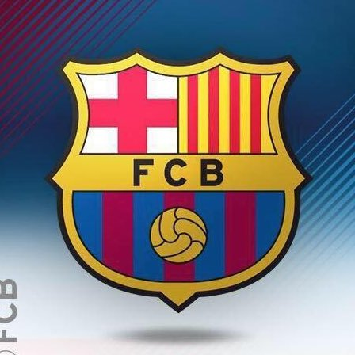

El futbol (de l'anglès football, "pilota de peu") és un esport d'equip jugat entre dos equips d'onze jugadors amb una pilota esfèrica. El juguen més de 250 milions de persones a més de 200 països, convertint-lo en l'esport més popular del món. Es juga en un camp rectangular de gespa o gespa artificial, amb una porteria a cada un dels costats del camp. L'objectiu del joc és introduir la pilota a dins de la porteria contrària (marcar un gol), impulsant-la amb el peu o qualsevol altra part del cos excepte les mans. Un dels onze jugadors de cada equip, que rep el nom de porter, és l'únic que pot tocar la pilota amb les mans.
Els primers precedents del futbol tenen més de 2000 anys d'antiguitat. Al segle VIII el joc ja havia arribat a Anglaterra, però no fou fins al 1868 que The Football Association redactà les Regles del Futbol.
La competició del futbol internacional més prestigiosa és la FIFA World Cup, celebrada cada quatre anys. Aquest esport, el més vist al món, té una audiència que dobla la dels Jocs Olímpics d'estiu.
El Futbol Club Barcelona, popularment conegut com a Barça, és una entitat esportiva de Barcelona (Catalunya) fundada el 29 de novembre de 1899 per un grup de joves futbolistes suïssos, catalans i britànics encapçalats pel ciutadà suís Joan Gamper.
